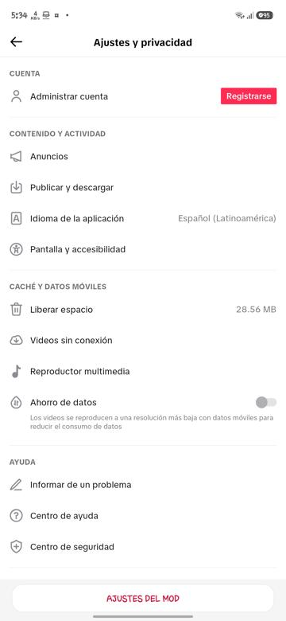

Feed
Oculta anuncios detectados en dos recorridos del feed y muestra cuántos se filtraron en la sesión.
ANDROID · TIKTOK LITE 47.8.15
Filtra anuncios del feed, guarda videos sin marca de agua cuando haya una fuente limpia y controla ambos parches desde Ajustes del mod.

Oculta anuncios detectados en dos recorridos del feed y muestra cuántos se filtraron en la sesión.
Prefiere la versión sin marca de agua para las descargas permitidas cuando está disponible.
Controla los parches desde Ajustes y privacidad. El panel sigue el tema de esa pantalla y admite ocho idiomas.


El flujo verificado usa Morphe Desktop con los APK divididos de TikTok Lite 47.8.15 para ARM64. La instalación completa desde Morphe Manager sigue en pruebas.
Consultando GitHub…